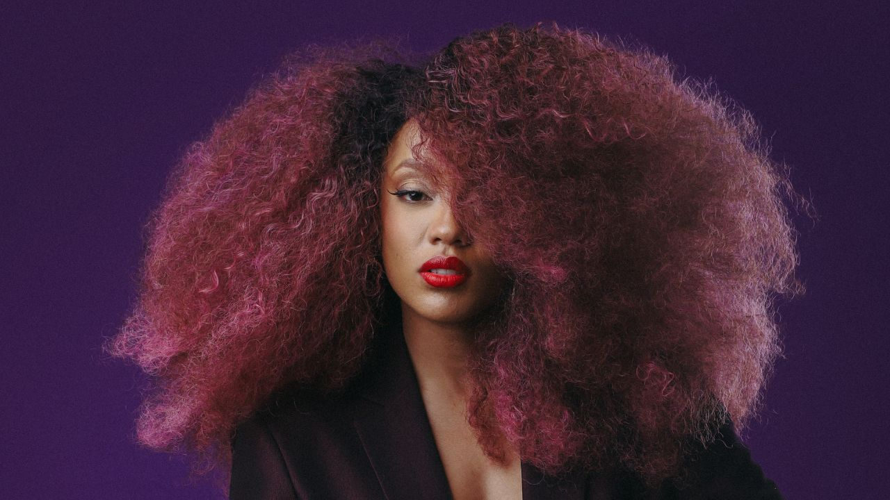

Luci Saluzzi estreia show “Travessia” no Teatro Gazeta, em São Paulo

Atriz conhecida por grandes musicais e por dublagens de filmes da Disney e Marvel fará apresentação inédita em 29 de janeiro de 2026.
Após o sucesso do musical Dreamgirls, a atriz Luci Saluzzi estreia seu primeiro show musical, “Travessia”, no Teatro Gazeta, em São Paulo, no dia 29 de janeiro de 2026. Mais do que um show musical, a proposta é descrita como uma experiência sensorial e narrativa, em que a história da artista é cantada e vivida em um palco que se transforma em espaço de memória, arte e presença.
“O show nasceu de um momento de travessia mesmo. Eu estava num processo muito profundo, apesar de involuntário e surpreendente, de reorganizar minha vida, minha identidade artística e emocional, e senti vontade de criar algo que me permitisse transbordar tudo isso”, explica Luci. “A ideia do show é essa: um espaço de encontro, onde música, palavra e corpo se misturam para contar uma história que não é linear, mas é honesta.”
Entre cinema e teatro: a voz de Luci Saluzzi em produções Disney e Marvel
A voz da atriz é conhecida não apenas pelo teatro musical, mas também por grandes produções da Disney no cinema e no streaming. Nos palcos, Luci foi protagonista de Dom Casmurro, como Capitu. Já na dublagem, é a voz brasileira de Asha, heroína do filme Wish: O Poder dos Desejos; de Riri Williams, de Coração de Ferro e Pantera Negra: Wakanda Para Sempre, do universo Marvel; de Sarabi, do live-action Mufasa: O Rei Leão; e da Fada Azul, do live-action de Pinóquio.
Em “Travessia”, essa trajetória múltipla se transforma em matéria artística. “O que eu quero passar com esse show é continuar. Hoje, esse é o meu ato de coragem”, afirma. “Quero que as pessoas sintam que atravessar dores, silêncios, recomeços e contradições faz parte de estar viva. Não é um show sobre superação no sentido clichê, é sobre não se abandonar, mesmo quando tudo parece instável.”
Produção, direção musical e participações especiais
O espetáculo é produzido pela A Casa que Fala e Tomate Produções, com direção musical de Edyelle Brandão. Já estão confirmadas participações especiais de: Thales César (ator e cantor, finalista da última edição do The Voice Brasil), Hipólyto (ator que fez sucesso recentemente como Fiyero de Wicked), Graça Cunha (cantora da Banda Altas Horas e jurada do Canta Comigo), Izy Mistura (cantor e jurado do Canta Comigo) e Marília Lopes (atriz e cantora). Outros convidados ainda serão anunciados.
“É um show que convida quem assiste a se olhar, a sentir, a lembrar de si. Não é só para assistir, é para atravessar junto”, define Luci. “É arte feita a partir da experiência real, da vulnerabilidade e da escuta. Quem vai, sai diferente, nem que seja um pouquinho mais em contato com o que sente.”
“Aquela menininha do balanço no pé de goiaba ainda está aqui”, completa a artista. “E é por ela também que eu quero seguir cantando.”
Serviço — “Travessia”, com Luci Saluzzi
Data: 29 de janeiro de 2026 (quinta-feira)
Horário: 20h
Duração: 90 minutos (sem intervalo)
Local: Teatro Gazeta Avenida Paulista, 900 – Térreo Próximo ao metrô Trianon-MASP
Ingressos: link no Sympla
Ingressos
Setor Premium
Inteira: R$ 150
Meia-entrada: R$ 75
Plateia
Inteira: R$ 120
Meia-entrada: R$ 60
Ingresso Solidário
R$ 80 (valor único) — mediante doação de 1kg de alimento não perecível ou 1kg de ração para pets
Vendas online: Sympla
Bilheteria física: Teatro Gazeta — terça a domingo, das 14h às 20h
Informações importantes
Meia-entrada Conforme a legislação vigente (Lei Federal nº 12.933/2013), têm direito ao benefício estudantes, idosos com idade igual ou superior a 60 anos, pessoas com deficiência e jovens de baixa renda, mediante apresentação de documento comprobatório válido na entrada do evento.
Ingresso social Válido exclusivamente mediante a entrega de 1kg de alimento não perecível ou 1kg de ração no momento do acesso ao teatro. Caso o item não seja apresentado, o espectador deverá pagar a diferença para o valor do ingresso inteiro correspondente ao setor escolhido, diretamente na entrada do evento.